Линус Торвальдс, создатель ОС Linux
| Стив Балмер, президент и главный
исполнительный директор (CEO) Microsoft: "В 2001 г. Linux составит
наиболее серьезную опасность для корпорации. Я бы действительно расценивал
феномен Linux как угрозу номер один". |
|
| Линус Торвальдс, создатель ОС Linux:
"Я считаю, что Microsoft создала объективно плохую операционную систему, и
мне интересно наблюдать, как это постепенно доходит до
людей". |
Конфликт надвигался уже давно. Просто не могло столь бурное распространение
Linux не встретить сопротивления на своем пути. До недавних пор настоящее
противостояние между Windows и Linux имело место только на рынке серверных ОС -
позиции Windows 9х в секторе "домашних" операционных систем объективно были
непоколебимыми. Мощны они и сейчас, но внезапно все переменилось. Усилия
многочисленных разработчиков привели к тому, что среда Linux из мрачной
UNIX-подобной стала постепенно все более графической и понятной пользователю.
Случилось то, чего в общем-то не ждали, - Linux начал вторжение на рынок
"настольных" операционных систем.
Ситуация несколько напоминает "Звездные войны", верно? Хладнокровная,
могущественная империя, с одной стороны. Кучка независимых бунтарей - с другой.
И заметьте: на наших с вами глазах повстанцы добиваются несомненных успехов. В
борьбу вовлечено уже множество домашних и офисных пользователей ПК. Так какую
сторону занять? Кто прав? И что выбрать? Цель нашего репортажа - разобраться в
особенностях противостояния и выяснить, а есть ли на эти вопросы определенный
ответ.
Эпизод I. Скрытая угроза
Корни противостояния уходят в эпоху, когда не было разделения на "просто" и
"суперкомпьютеры": каждый компьютер был "супер". Linux идеологически базируется
на архитектуре UNIX, разрабатывавшейся Bell Laboratories с 1969 г. Первичный код
операционной системы UNIX был затем лицензирован различными компаниями (Sun,
Hewlett-Packard, IBM и др.), которые в дальнейшем развивали на его основе
собственные ОС. Конечно же, стоившие немалых денег. Никаких исходных текстов в
свободном доступе - конкуренция!
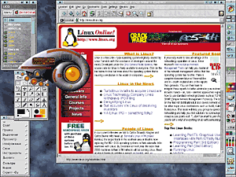
Возможный вид Рабочего стола Linux. Используется графическая оболочка
KDE 2.0.1. На столе открыты: licq (ICQ-клиент), графический редактор GIMP, KDE
Media Player, броузер Konqueror.
Однако если крупная фирма может позволить себе дорогую ОС, то у университетов
возможностей для покупки ПО существенно меньше. Даже компьютеры им обычно дарят
спонсоры и удачливые выпускники. Зато в отношении научного потенциала и энергии
с университетами вряд ли могут сравниться другие организации. Так сама собой
зародилась идея написания программного обеспечения учеными и студентами "для
самих себя" - бесплатных систем, распространяемых свободно и широко, а главное -
с открытым кодом. Ведь работать над такими продуктами должно как можно больше
программистов-энтузиастов. И началось.
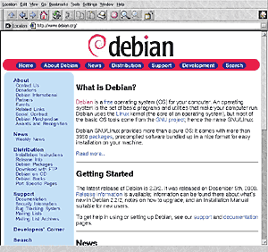
Сайт чрезвычайно интересного дистрибутива Linux, Debian (http://www.debian.org/). Он
разрабатывается и поддерживается усилиями сообщества программистов-энтузиастов
без помощи коммерческой компании-координатора.
В 1984 г. Ричардом Сталманом инициируется проект GNU, название которого
"расшифровывается" как GNU's Not Unix (несколько своеобразная, но прижившаяся
шутка). Цель проекта - развитие программного обеспечения, не привязанного ни к
какой коммерческой лицензии; изначально не бесплатного, но свободно
распространяемого и модифицируемого (Open Source Software). Такой подход
подразумевает возможность внесения исправлений в код ОС любым (способным на это)
пользователем.
В 1991 г. Линус Торвальдс (тогда еще 21-летний студент Хельсинкского
университета) начинает работу над ядром операционной системы Linux, основанной
на идеологии GNU. Вскоре он выкладывает первую версию этой ОС в Internet с
возможностью свободного доступа. Сперва ни официальные представители Microsoft,
ни массовый пользователь не обращают внимания на новоявленный продукт. А тем
временем в научной среде Linux все более развиваясь постепенно становится
стандартом де-факто.
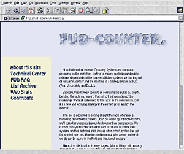
Сайт FUD Counter (fud-counter.nl.linux.org) содержит опровержения (опять-таки
подкрепленные аргументами) безосновательных нападок на Linux. А FUD, кстати,
расшифровывается как Fear, Uncertainty & Doubt - страх, неуверенность и
сомнения.
Одна из основных причин тому - конечно же, бесплатность. Linux изначально
разрабатывается с учетом именно университетских нужд: возможность запуска на
маломощных компьютерах, ориентированность на стабильную работу в сети. Функции
взаимодействия с Internet (а позже и с WWW в полном объеме) также с легкостью
интегрируются в ядро новой ОС.
Итак, Linux постепенно выкристаллизовывается как элитарный продукт, "от
хакеров - хакерам". (Хакерами в данном случае будем называть не хулиганов и
взломщиков, а просто продвинутых программистов и системщиков. Тем более что
многие хакеры именно так себя и характеризуют. - Прим. ред.) Развивающаяся
параллельно ОС Windows, в свою очередь, направлена на рядового пользователя.
Разработчики из Microsoft с гордостью заявляют о ничтожности сроков, необходимых
для овладения системой и приложениями. Тем временем в 1993 г. число
пользователей Linux на планете достигает ста тысяч.
Эпизод 2. Зерна гнева
Вместе с 1995 г. наступает эпоха Windows 95. И раньше-то конкурировать с
Microsoft было затруднительно, теперь же это представляется в принципе
невозможным. Коммерческие приложения для новой платформы заполняют полки
магазинов. Игры, офисные пакеты, инструментальные средства для программистов,
художников и музыкантов - все это в огромных объемах разрабатывается именно под
Windows 95. Есть, конечно, в этой ОС и недостатки. По сравнению с предыдущими
продуктами Microsoft в Windows 95 явственно видны недоработки и уязвимости
("баги" ). Что, впрочем, не удивительно, если учесть, насколько она является
новаторской - полностью графический интерфейс, драйвера для поддержки огромного
числа устройств, система Plug'n'Play. Особенно привлекает пользователя именно
графический инструментарий для управления системой. Интуитивность его
действительно на высоте - не зря в разработку Windows 95 вложены огромные
средства. Новая ОС уверенно занимает почетное место чуть ли не на каждом
домашнем и офисном компьютере. Несомненные огрехи системы представляются
конечному пользователю незначительными в сравнении с ее мощью и богатейшим
потенциалом. А ведь для рынка это главное. Microsoft празднует успех.
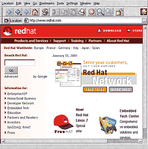
Компания Red Hat Linux (http://www.redhat.com/) показывает наибольшие успехи на рынке
ПО с открытым кодом, привлекая инвестиции крупных бизнес-партнеров. Таких, как
Intel например.
Быть может, несколько ослепленный этой победой, Билл Гейтс недооценивает
перспективы развития Internet. Графический броузер Netscape третьего поколения
делается безусловным лидером в своей области: его можно бесплатно скачать по
FTP, установить и немедленно начать прогулки по Internet, пусть пока не слишком
обширному, но все равно чрезвычайно притягательному. Билл Гейтс, однако, вовремя
понимает свой просчет и прилагает максимум усилий к перехватыванию
инициативы.
Что же может противопоставить сообщество Linux (в 1995 г. - уже полтора
миллиона человек) массированному вторжению Windows 95 на пользовательский рынок?
Казалось бы, так и оставаться этой ОС в стенах университетов да на компьютерах
фанатов-программистов
|
|
| Эмблемой Linux привычный (теперь) всем пингвин стал не
сразу. Вторым по популярности вариантом была в свое время такая вот
киберпанковская лиса. |
А вот это официальный (одобренный Торвальдсом и принят
сообществом) талисман Linux - пингвин по имени Tux. Нарисовал его художник
Ларри Эвинг (Larry Ewing), используя исключительно программные средства
Linux, а именно - графический редактор GIMP. |
Но под штандарты с изображением пингвина (талисмана ОС Linux) становятся
коммерческие компании. В 1992 г. основана немецкая фирма SuSE, занявшаяся
разработкой ПО в рамках проекта Open Source (к 2000 г. SuSE Linux станет
наиболее распространенным дистрибутивом в Европе). В 1994 г. в США организована
компания Caldera, выпустившая свой дистрибутив Linux. А в 1995 г. возникла Red
Hat Software, Inc. (на настоящий момент, по различным оценкам, более 60%
пользователей Linux установили на свои машины именно Red Hat Linux).
К середине 90-х гг. усилиями компаний и активных пользователей Linux
приобретает заметный вес в области поддержки Web-серверов. Более того, его
"натиск" на область обслуживания Internet-соединений становится чрезвычайно
агрессивным. Если в августе 1995 г. на долю Linux приходится около 5% активных
серверов в Сети, то уже через год этот показатель достигает 40%. В большой
степени секрет кроется в том, что в стандартный комплект поставки Linux входит
бесплатный Web-сервер Apache - вполне конкурентоспособный по сравнению даже с
Microsoft IIS 2000 г. выпуска, стоящего весьма немалых денег. Таким образом,
теперь каждая перманентно подключенная к Internet машина с установленной на ней
версией Linux способна работать в режиме Web-сервера. Итог: обслуживание Сети
переходит в вотчину некоммерческих систем. По оценкам, на настоящий момент
программные Web-серверы Microsoft установлены всего лишь на 20% узлов
Internet.
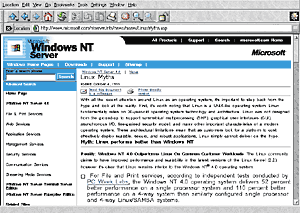
Классическая страничка под названием Linux Myths от Microsoft. Обратите внимание: сравнений с Windows 95 не
проводится - только с Windows NT. Linux, таким образом, рассматривается, в
первую очередь, как серверная, а не пользовательская
система.
А вот что касается пользовательского интерфейса, графики и совместимости с
дополнительным железом, то тут в середине 90-х гг. Linux оказывается в очевидном
проигрыше. Поставляющаяся с ним графическая система X Window не слишком мощна.
Достаточно сказать, что программная поддержка антиалиасинга (сглаживания линий
при масштабировании, например, стандартных шрифтов) включена в X Window только
лишь в... 2000 г. И хотя именно Red Hat Linux 4.1 использовался для создания
спецэффектов при съемках фильма "Титаник", успехи Windows в области графического
представления данных на пользовательском уровне остаются в середине 90-х гг.
непревзойденными.
Такое положение дел, правда, не мешает спать поклонникам Linux. Как, впрочем,
не повергает их в шок и необходимость настройки всех важнейших параметров
системы исключительно из командной строки либо посредством редактирования
конфигурационных файлов. Зато любые изменения в системе оказываются вполне
очевидными. Но для специалиста. Вообще, средний уровень пользователей Linux как
программистов и системщиков остается существенно выше среднего уровня
приверженцев Windows. Первым приходится самостоятельно разбираться в обширной
документации, работать с кодами программ, писать управляющие скрипты. Вторые
обходятся рисованными кнопками, ползунками и переключателями, а также
наслаждаются преимуществами системы Plug'n'Play. Зарождается жесткое
идеологизированное противостояние приверженцев двух систем.
Эпизод 3. Оперативный простор
В 1998 г. разворачивается настоящий бум, названный в прессе "Linux Hype".
Крупные корпорации валом валят в мир свободного ПО, на ходу раскрывая бумажники.
29 сентября Intel, Netscape Communications и пара более мелких фирм инвестируют
миллионы долларов в Red Hat. Число пользователей Linux в мире достигает уже 12
миллионов. Как ни парадоксально, такое положение дел играет на руку Microsoft,
втянутой в антимонопольное разбирательство. 19 ноября представитель корпорации
предъявляет в суде коробку Red Hat Linux 5.2 в качестве доказательства того, что
его корпорация не владеет рынком операционных систем безраздельно.
Тем не менее вскоре на свет появляются два внутренних документа Microsoft,
названные среди "линуксоидов" Halloween Documents: I и II. Строго
говоря, подлинность их не подтверждена официально; утверждается, что они попали
в руки Эрика Раймонда, одного из ведущих активистов движения за создание
программ с открытым исходным кодом, от неназванного (еще бы!) сотрудника
Microsoft. В документах рассматривается и оценивается угроза прибылям (и самому
существованию) корпорации со стороны Linux, а также предлагаются способы борьбы
с такой угрозой. Способы, надо сказать, достаточно радикальные и с идеалами
свободной конкуренции плохо согласующиеся. Среди них, например, модификация
существующих и создание новых протоколов межкомпьютерного обмена данными -
разумеется, закрытых, с тем чтобы система Linux в принципе не смогла бы работать
с ними. Признается, что ряд приложений (в частности, Web-сервер Apache) на
момент написания документа объективно превосходит аналогичные продукты
Microsoft. Соответственно предлагается сосредоточить усилия и ресурсы в первую
очередь на противодействие Linux. Еще раз оговоримся, что официальность
Halloween-документов не подтверждена, однако в любом случае дыма без огня, как
известно, не бывает.
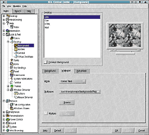
Ответ проекта KDE на высказывания о том, что Linux, дескать, нельзя
настроить с использованием графических средств. KDE - можно. Причем некоторые
стандартные для Linux возможности управления окнами в Windows так и не были
реализованы.
К началу 1999 г. Linux уже установлен более чем на 15 млн компьютеров. Dell
впервые предлагает клиентам машины с предустановленным дистрибутивом Linux. Red
Hat открывает два представительства в Европе, а SuSE - в Америке. Акции Red Hat,
VA Linux и прочих на бирже Nasdaq взлетают до совершенно невероятного уровня.
Для примера: акции Red Hat за первый же день торгов после выпуска в обращение
вырастают с $14 до 52 - это восьмой по стремительности показатель за всю историю
фондового рынка США! 15 ноября все та же Red Hat поглощает компанию Cygnus,
становясь крупнейшим производителем программного обеспечения с открытым кодом в
мире. В том же месяце Intel инвестирует крупную сумму в другого разработчика
Linux, SuSE.
На этом процесс не останавливается. Авторитетнейший журнал InfoWorld в 2000
г. называет дистрибутив Red Hat Linux 6.1 "Продуктом года". В мае SuSE Linux
становится первым из дистрибутивов, успешно инсталлированным на суперкомпьютере
IBM S/390. В июне появились варианты этой системы для платформ Apple PowerPC,
IBM RS 6000, Motorola PreP. Фантастический прорыв, если вдуматься.
К началу третьего тысячелетия шум поутих, волнения на рынке улеглись. И
именно это говорит о том, что противостояние вступает в решающую фазу. Ведь
любые взлеты и сенсационные заявления вполне могут сопутствовать рискованным
проектам-однодневкам. В случае же с Linux стало очевидным: эта ОС пришла всерьез
и надолго. Не для того ли, чтобы кого-то вытеснить с рынка?..
Противостояние: штабные войны
Теперь, когда проведена "рекогносцировка местности" и мы выяснили позиции
соперников, пора, пользуясь затишьем, спокойно разобраться в обстановке.
Попробуем это сделать, хотя, забегая вперед, заметим, что правду найти будет ох
как нелегко.
- Открытость исходного кода.
- Непрекращающийся процесс его улучшения и исправления.
- Гибкость и ориентированность на различные аппаратные платформы.
- Отсутствие зависимости от патентов и лицензий.
Именно эти качества Linux привлекли не просто пользователей, но бизнесменов.
Профессиональные менеджеры, увидев успех Microsoft, оценили перспективы рынка
ПО. Но бороться с гигантом на его поле его же оружием было уже бессмысленно:
печальный пример OS/2 наглядно продемонстрировал это. И вот тогда-то коммерсанты
обратили свое внимание на Linux. Но постойте: как можно делать деньги на
свободно распространяемом ПО? В IBM ответили в свое время на этот вопрос
достаточно эмоционально: "It's all about service, stupid". Дело действительно
как раз в обслуживании и сопровождении программного продукта, а вовсе не в его
собственной цене.
Linux ведь, сделав несколько уверенных шагов к развитию графического
интерфейса, все равно остается системой командной строки. Не зная его
архитектуры и принципов работы, нельзя построить из стандартного дистрибутива
надежно защищенную систему (в отличие от тех же Windows NT/2000, начальные
установки которых в этом смысле надежнее). Системщики говорят: "Linux имеет
дружественный интерфейс, но не ко всем". Конфигурационные файлы, безусловно,
проигрывают системам графических меню в наглядности. Другое дело, что настройки
Linux удобны и ясны для любого хакера, т. е. человека, глубоко разбирающегося в
системе. Значит, укомплектовав отдел технической поддержки несколькими такими
профи, можно рассчитывать на неплохой поток заказов на обслуживание от
пользователей свободного ПО.
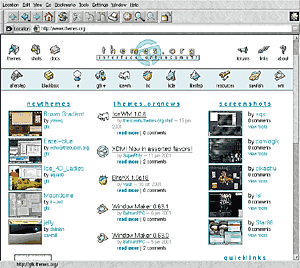
Сайт Themes.org -
настоящая Мекка эстетствующего "линуксоида". Здесь собраны темы Рабочих столов
для KDE, Gnome, других графических оболочек и программ.
Платформа Windows изначально была ориентирована на пользователя уровнем
пониже хакерского. Важно сразу понять, что это отнюдь не недостаток; а просто
другое направление развития. Ведь в начале 90-х гг. Windows и Linux почти не
сталкивались. Только к настоящему времени они начали входить в состояние,
называемое на армейском языке "боевым соприкосновением": у них появились общие
зоны интересов. Windows со своими продуктами NT и 2000 стремится продвинуться на
рынке серверных систем, тесня UNIX-подобные ОС. Сторонники Linux, пытаясь
доказать себе и всему свету жизнеспособность своей "любимицы", усердно
продвигают ее именно на пользовательский рабочий стол, где уже, казалось бы,
навсегда поселилась Windows.
Столкнувшись непосредственно, Windows и Linux вынуждены уже именно
противостоять, а не тихо развиваться сами по себе: в коммерции принято бороться
за рынки. Более того, бороться надо и ради самого выживания. В связи с
развернувшимся в Штатах антимонопольным преследованием Microsoft последней
просто необходим конкурент - система, указав на которую, можно было бы с
уверенностью заявить: "Нет, Ваша честь, мы не монополия!" Злые языки вообще
утверждают, что внимание широкой общественности на Linux обратила именно
Microsoft в связи со своими проблемами в суде... Мы в это не верим, но какая-то
частичка верного смысла в этом, несомненно, есть.
Противостояние: окопная правда
Раз на свете существует определенное количество несовместимых по архитектуре
и приложениям операционных систем, значит, среди них непременно будет выделяться
одна, объективно лидирующая. Это кажется очевидным.
Но если такая система есть, то почему сторонники всех прочих не
удостоверились наглядно в ее превосходстве и не перешли на нее, забросив свои
отсталые инструменты?
Приходилось ли вам когда-нибудь - в чате, в списке почтовой рассылки, на
доске объявлений - наблюдать за спорами приверженцев различных операционных
систем? Чаще всего Windows и Linux, как наиболее с этой точки зрения
показательных? А может, вы и сами принимали участие в подобных обменах мнениями?
Тогда согласитесь, что очень часто эти споры в считанные минуты превращаются в
типичные свары, а аргументация сторон представляет собой обмен воплями
"МАСТДАЙ!!!" и "РУЛЕЗ!!!" со все нарастающей интенсивностью. И если модератор
канала либо конференции не прекращает этого безобразия, оно может продолжаться
достаточно внушительное время. Да и в жизни, между прочим, таких примеров
предостаточно. Вы дайте пообщаться на околокомпьютерную тематику системному
администратору (приверженцу Linux) и скромному пользователю, овладевающему,
скажем, пакетом Microsoft Office. Наверняка, уже спустя пять минут вы услышите
массу колких замечаний, если не откровенных оскорблений. Попахивает этакой
религиозной войной, не правда ли?
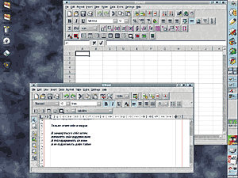
Две программы из пакета KOffice: KSpread (электронные таблицы, аналог
Excel) и KWord. Причем работа с русским языком, надо отдать им должное, доведена
до автоматизма: документ, созданный под Windows (в кодировке CP 1251,
разумеется), открывается в KOI8-R, так что с ним сразу же можно работать дальше.
Основная проблема таких спорщиков - в узости мировоззрения. Как правило, они
постоянно используют и досконально знают лишь одну из систем. Другую - видели
лишь мельком, пару раз, и она "не понравилась, не пошла". На основании этого
мизерного неудачного опыта и делается заключение: "мастдай". А зато привычная,
родная, давно (на том или ином уровне) изученная система - "рулез", потому что
работает "как надо". Но ведь представление о том, "как надо", у каждого
свое.
Как определить, какая система лучше? И можно ли это сделать вообще?
Посмотрим. С одной стороны, все очень просто. Что выбрать? Разумеется, Windows!
Какой версии? Ну конечно же, самой последней! А вот почему "разумеется" и
"конечно же", мало кто задумывался. У всех же Windows стоит. Вот пусть и у меня
будет. Не могут же ошибаться 95% владельцев ПК, установивших на свои машины ту
или иную версию этой операционной системы!
Но что же оставшиеся пять процентов? Заблуждаются? И те почти две трети
системных администраторов, что поддерживают на своих (крупных и мелких)
Web-серверах операционные системы не от Microsoft, - они заблуждаются тоже? Или
все же что-то здесь не так?
Разбираться в ситуации надо взвешенно, отвлекаясь от шума и эмоций. Правда,
удается это не всегда. Достаточно сказать, что даже сравнения Windows NT 4.0 с
Linux в 1998 г., проводившиеся в двух уважаемых, солидных, независимых (вроде
бы) тестовых лабораториях, привели к прямо противоположным результатам. В одном
случае лидером оказывался Linux, в другом - продукт Microsoft. То есть вместо прояснения ситуации эти
тесты только прибавили тумана. Что уж говорить о попытках сравнения недавно
появившейся Windows 2000 и свежих версий Linux! Об их объективности судить
трудно, и выбирать пользователям снова придется исходя из собственного опыта или
же ориентируясь на отзывы коллег и знакомых.
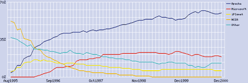
Информация проекта Netcraft (http://www.netcraft.com/): относительная доля узлов Сети,
находящихся под управлением тех или иных Web-серверов. Гордость сообщества Linux
- Apache, показан синим цветом; программные продукты Microsoft -
красным.
А отзывы эти не всегда бывают взвешенными и выдержанными. Поскольку нарекания
к Windows касаются прежде всего "багов", и тема эта уже заезжена до
невозможности, сейчас мы рассмотрим несколько стандартных утверждений против
Linux, а затем выясним реальное положение дел.
1. "Конечно, альтернативы Windows есть. Но если вы желаете заниматься
бизнесом, вам не обойтись без MS Word, Excel и т. д.", - Ким Картни,
обозреватель сайта MSNBC.
В мире Linux существуют как минимум 4 проекта, поставивших целью создание
офисных приложений. Это Applixware Office, GNOME Workshop, KOffice и StarOffice.
Все они уже способны работать с готовыми RTF- и DOC-файлами, а также сохранять
документы в более разумных, компактных форматах без потери функциональности.
2. "Linux не представляет для Windows угрозы, поскольку современной
операционной системе необходимо поддерживать ориентированные на бизнес
приложения, а Linux таких приложений не имеет", - Эд Мут, менеджер одного из
подразделений Microsoft.
Вот небольшой перечень приложений под Linux, доступных, как правило, свободно
и бесплатно:
- базы данных: IBM DB2, Informix, Oracle 8, Sybase SQL Anywhere;
- графические редакторы: CorelDraw 9, GIMP;
- электронные таблицы: Wingz, Gnumeric;
- многопользовательские приложения: Lotus Notes Domino Server, Novell
Directory Services;
- совместимые с ICQ Internet-пейджеры: licq, kicq, GnomeICU, micq...
Кстати, списки доступных под Linux программ можно найти на сайтах www.freshmeat.net/appindex, linux.davecentral.com и
sound.condorow.net.
3. "Под Linux нет возможности запускать приложения Windows, такие, как Word и
Excel, а я без них жить не могу" , - сотни тысяч пользователей.
Существует немало эмуляторов Windows в среде Linux: Citrix MetaFrame,
Mainsoft's MainWin, TreLOS Win4Lin, VMWare, WINE... Они различны по
функциональным возможностям: одни обеспечивают работу приложений для Windows 9x;
другие способны запускать еще и продукты для Windows NT/2000. Есть, впрочем, и
сложность в этом направлении - отсутствие поддержки DirectX. И хотя игры под
OpenGL прекрасно под Linux запускаются, о большинстве самых современных игр,
которые выпускаются в расчете на DirectX, пользователи Linux пока лишь мечтают.
Однако, по заявлениям разработчиков, эта проблема может быть вскоре
преодолена.
4. "Вирусов под Linux очень мало или совсем нет потому, что эта система не
распространена. Стоит ей выйти на уровень хотя бы 10% от распространенности
Windows, и мы увидим массу вредоносных программ для Linux!" - множество
испуганных пользователей.
Принципиальное отличие Linux от Windows в смысле работы с учетными записями
пользователей заключается в том, что в Linux у каждого файла имеется атрибут
владения. То есть каждый файл принадлежит какому-либо конкретному пользователю,
зарегистрированному в системе, и одной группе пользователей: скажем,
пользователю vasya группы students. В то же время управлением системой
занимаются программы, принадлежащие в основном суперпользователю - root и его же
группе, root. Таким образом, если даже vasya загрузит себе в домашнюю директорию
гипотетический вредоносный код и попытается его исполнить, исполняться такой код
будет именно с привилегиями пользователя vasya. И потому он не сможет повредить
или заменить файлы, принадлежащие root, т. е. нанести ущерб функциональности
системы в целом. Это, конечно, упрощенное объяснение, но в целом оно верно
отражает картину. Конечно, увидев, что запущенное им приложение выдает сообщения
о невозможности что-то там сделать, vasya может (если компьютер принадлежит ему)
переключиться в режим root и исполнить код как суперпользователь - но в этом
случае уже, простите, медицина бессильна. Никуда не денешься: за упроченную
систему безопасности приходится платить повышением уровня подготовки
пользователей Linux - некий отблеск их элитарности остается до сих пор.
Продолжать перечисление по пунктам можно достаточно долго, но мы сэкономим
журнальную площадь и порекомендуем вашему вниманию замечательную сводку таких
вот "убийственных" доводов против Linux, собранную на страничке Microsoft. Страничка так и называется - Linux
Myths. Благодаря смысловому многообразию английского языка, это название можно
перевести и как "Мифы Linux", и как "Мифы о Linux" . Все завистит от того, по
какую сторону линии фронта находится ваш жесткий диск и что за система на нем
установлена. Для сравнения можно изучить и сайты противоположной направленности:
fud-counter.nl.linux.org, а также www.zdnet.com/pccomp/features/fea0797/nt/welcome.html.
Так где же она, правда?
А правда здесь удивительная: она - в выборе. Вы можете стать на сторону мощи
и традиций, используя Windows. И никто не вправе обвинить вас в этом. Можете вы
и примкнуть к армии поклонников Linux, косвенно приобщившись к движению Open
Source и поставив целью стать истинным профи по уровню владения компьютером.
Этим можно гордиться, но не более того. Не стоит забывать, что правда там же,
где и красота. А согласно старой английской пословице - beauty lies in the eyes
of the beholder, т. е. "красота - в глазах смотрящего". Стало быть, в глазах
оценивающего. Каждому - свое. И это здорово.
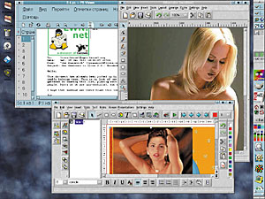
Еще два представителя пакета KOffice: KIllistrator (простенький
графический редактор, примерно уровня PhotoPaint) и KPresenter (программа для
создания презентаций). И опять-таки присутствует совместимость с форматами MS
Office.
Но, как водится, есть и более объективный, в особенности для наших,
российских реалий, критерий - деньги. У менеджеров крупных западных
Web-компаний, например, не вызывают уже нервного шока ситуации, когда
программное обеспечение одного (!) компьютера тянет на десятки тысяч долларов;
причем техническое обслуживание, консультации специалистов и настройка
оплачиваются отдельно. Да и в более скромном случае полный набор ОС Windows с
необходимыми (тому же Web-дизайнеру) приложениями стоит несколько тысяч
долларов. В то же самое время в Linux имеются аналоги практически всех
коммерческих приложений системы-соперницы, и функциональность этого ПО
стремительно повышается. Работы много в различных направлениях, но она идет,
поскольку в ней заинтересовано огромное число пользователей-творцов. Это вообще
основополагающий принцип идеологии сообщества Open Source и движения GNU, в
атмосфере которых зародился Linux: если ты знаешь, что нечто может быть сделано
лучше, сделай это лучше. Пассивный потребительский взгляд на вещи не
приветствуется. На Западе все четко: или ты платишь деньги и имеешь полное право
рассчитывать на полный сервис, или ты денег не платишь, но тогда будь готов
преодолевать трудности. Совместно с другими энтузиастами, но все же
преодолевать.
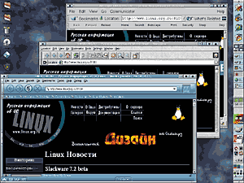
Три (из примерно десятка) броузера Linux: Mozilla, Konqueror и старый
добрый Netscape. Последний, скорее всего, вскоре сойдет со сцены, а для первых
двух будущее обещает быть радужным.
Причем интересно, что внутри самого Linux идет конкуренция между различными
проектами, осваивающими один и тот же участок фронта работ. Графические оболочки
KDE и Gnome бьются за Рабочий стол; пакеты Open Office и Koffice - за
организацию на этом столе полноценного набора офисных приложений и т. д. В
результате выигрывают все. Соперничающие проекты - поскольку код их открыт -
учатся друг у друга делать вещи правильнее. Пользователи же получают возможность
выбора и сравнения различных направлений.
Да, зачастую текущие версии общеупотребительных программ под Linux сыроваты.
Да, не всегда есть полноценная совместимость с форматами файлов Microsoft и
других компаний, не желающих предоставлять в бесплатное пользование свои
патентованные (и ставшие тем не менее стандартом де-факто) технологии. Но пусть
каждый, кто не без греха, положит руку на сердце и задумается: что ему делать,
если вдруг исчезнет пиратский рынок программного обеспечения? Это ведь только в
России есть возможность за несколько десятков рублей купить продукт, номинальная
цена которого в магазине сравнима с нашим годовым доходом.
А теперь, с другой стороны, как будет чувствовать себя добропорядочный
покупатель ПО, когда зависнет в самый ответственный, как водится, момент
приложение ценой в $6000? Зависнет точно так же, как если бы оно было
установлено с пиратского диска?
Вопросы, которые требуют раздумий, согласитесь. На Западе ими не задаются;
там привыкли платить за все подряд и привыкли к тому, что цену устанавливает
продавец. А нам с нашей психологией приходится раздумывать. Одна надежда на то,
что народная мудрость окажется права: "Русские медленно запрягают, да быстро
ездят".
Противостояние Windows и Linux - это тот случай, когда отправиться можно в
любом направлении. Что ж, поехали?